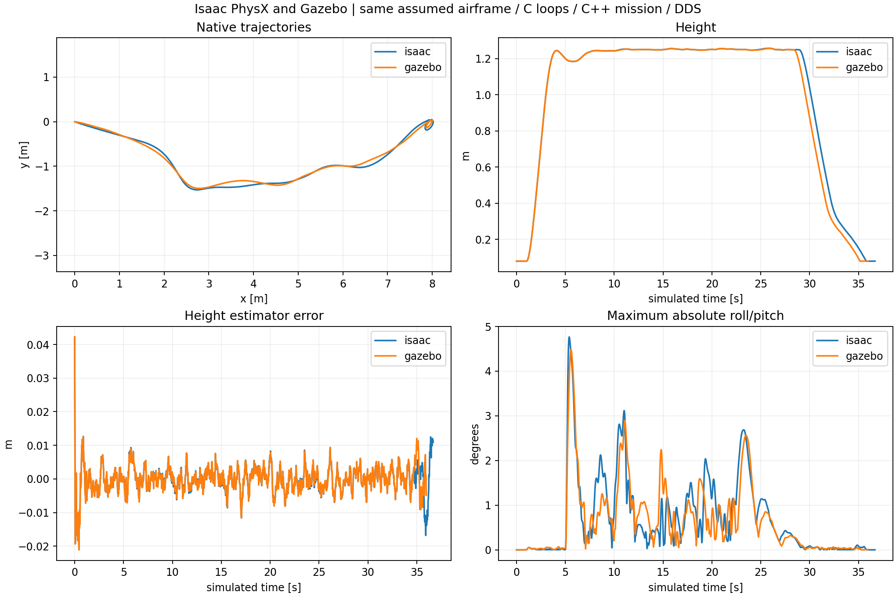
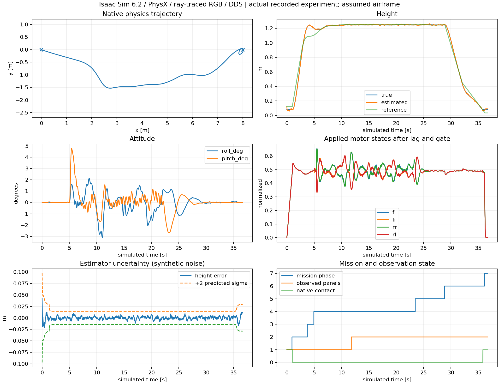
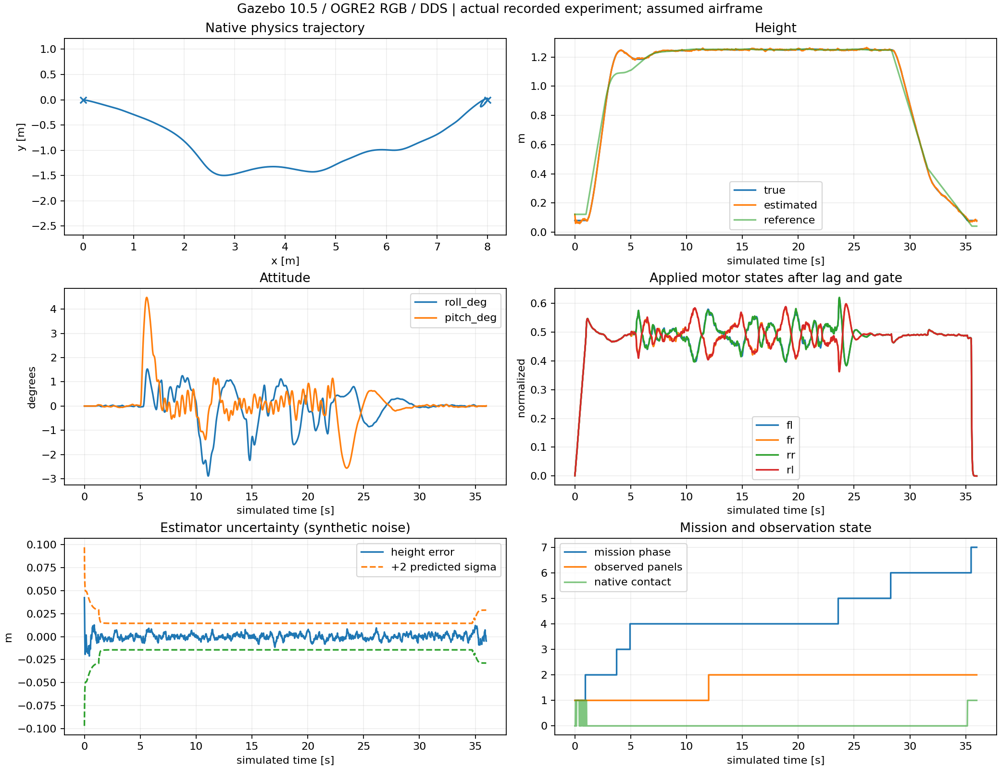

Isaac Sim 6.2 / PhysX / ray-traced RGB · Gazebo 10.5 / OGRE2 RGB · actual C + C++ mission + ROS DDS + YOLO/PnP
Isaac left · Gazebo right. Aligned by simulated time. Shorter recording holds its final frame. These are separate completed runs, not guaranteed simultaneous wall-clock starts.
| Quantity | Isaac | Gazebo |
|---|---|---|
| Mission time | 36.698 s | 35.998 s |
| Landing XY error | 3.231 cm | 2.117 cm |
| Panel clearance | 0.682 m | 0.560 m |
| Wall time | 139.912 s | 36.100 s |
Both: full phase sequence, no panel collision, native ground contact, virtual motors stopped, physical arming disabled. Complete video decoding and final source hashes checked.

CSV · Summary/source hashes · Metrics · Validation · DDS measurements · Exact source ZIP

CSV · Summary/source hashes · Metrics · Validation · DDS measurements · Exact source ZIP

Assumed airframe; simulated localization; analytic downward floor ray. Known-size blue panel fixtures, not general unknown-object autonomy. Native contact gates landing. Host C DLL, not an emulated RP2350. ROS C++ wrappers remain unbuilt. Windows execution does not establish a hard real-time hardware deadline.
Isaac original flight log · Gazebo original flight log · Full scope and retained failures · SHA256 manifest · GitHub repository